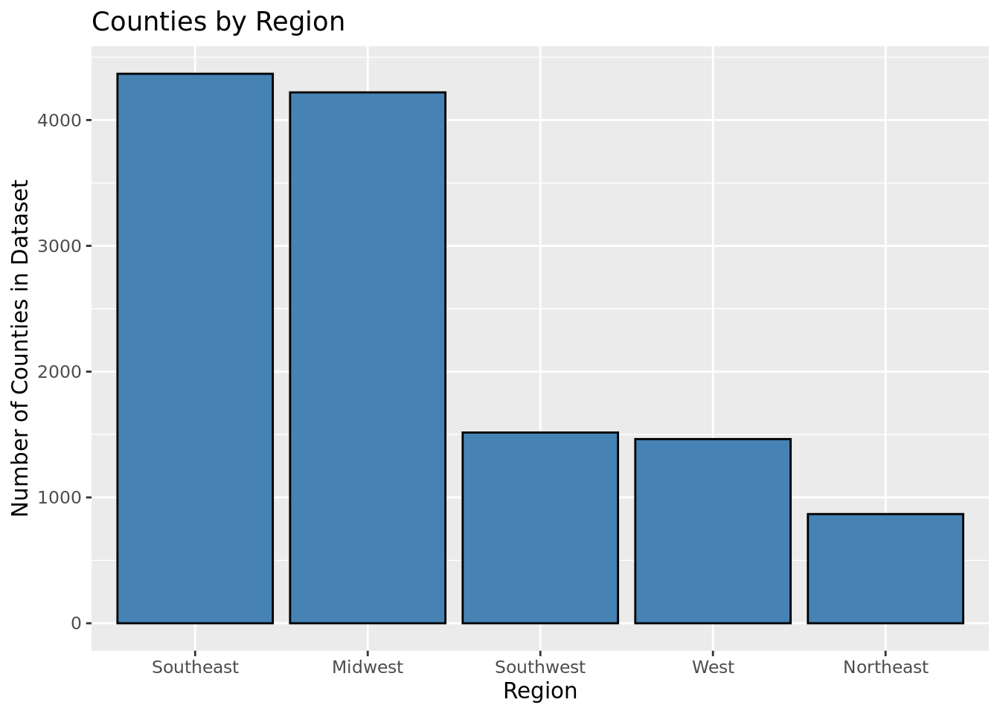

Our research is motivated by the desire to understand how air pollution differs between the various regions in the United States. We will be investigating the research question of how do air pollution levels differ between states from the West, Southwest, Midwest, Southeast, and Northeast as defined by the National Geographic Society of the mainland United States from the years 2008-2011?
In order to achieve our goal, we will be performing statistical analysis on the annual average ambient concentrations of PM 2.5 in micrograms per cubic meter, based on seasonal averages and daily measurement (monitor and modeled data) measurement in the air pollution data set. We hypothesize that highly Northeast will have the most air pollution as it is the larger industrial region in the Untied States. The air pollution data set is obtained from the Center for Disease Control (CDC). The data was originally collected by the Environmental Health Tracking Network. This data provides values about air pollution collected from Air Quality Systems (AQS) from 4,000 monitoring stations across the United States. It is also important to note that the data was collected in a completely ethical manner as regulated by CDC guidelines.
Methodology
To start our analysis, we must load in the neecessary packages and data.
Rows: 218635 Columns: 14
── Column specification ────────────────────────────────────────────────────────
Delimiter: ","
chr (8): MeasureName, MeasureType, StratificationLevel, StateName, CountyNam...
dbl (5): MeasureId, StateFips, CountyFips, ReportYear, MonitorOnly
num (1): Value
ℹ Use `spec()` to retrieve the full column specification for this data.
ℹ Specify the column types or set `show_col_types = FALSE` to quiet this message.
The air_quality dataset contains several statistics on fine particle concentrations and ozone concentrations on the county level in the United States from 2001 to 2008. Our analysis will focus on the annual average ambient concentrations of PM 2.5 based on seasonal averages and daily measurement, and we will be looking at the data from 2008 to 2011.
concentrations <- air_quality |>filter(MeasureName =="Annual average ambient concentrations of PM 2.5 in micrograms per cubic meter, based on seasonal averages and daily measurement (monitor and modeled data)", ReportYear >=2008) |>select(StateName, CountyName, ReportYear, Value) |>rename(avg_concentration = Value)
The distribution of average county PM 2.5 concentration in the United States from 2008-2011 can be seen with a histogram.
concentrations |>ggplot(aes(x = avg_concentration)) +geom_histogram(binwidth =0.5,fill ='steelblue', color ='black') +labs(x ="Annual Average Concentration of PM 2.5 (micrograms per cubic meter",y ="Count",title ="Distribution of County Fine Particle Concentration",subtitle ="2008 - 2011")
The distribution of annual average PM 2.5 concentrations is right skewed, so there are a few counties with large outliers. In general, concentrations range between about 4 and 22 micrograms per cubic meter.
# A tibble: 1 × 1
mean_avg_concentration
<dbl>
1 9.64
The median annual average PM 2.5 concentration is 9.64 micrograms per cubic meter. This is the typical value for a county in the United States from 2008-2011.
We are exploring how air quality differs by geographic region as defined by the National Geographic Society. The regions include the Northeast, Southeast, Midwest, Southwest, and West.
Using this division of regions, the Southeast and Midwest regions have the most counties, while the Northeast region has the least. However, all regions have at least 800 counties.
concentrations |>ggplot(aes(x =fct_infreq(Region))) +geom_bar(fill ='steelblue', color ='black') +labs(x ="Region",y ="Number of Counties in Dataset",title ="Counties by Region")

We compared the median annual concentration of fine particles for counties in each region to get an initial look of the regions suffering from poor air quality the most.
# A tibble: 5 × 2
Region median_concen
<chr> <dbl>
1 Southeast 10.6
2 Midwest 9.80
3 Northeast 9.31
4 Southwest 8.32
5 West 6.97
The Southeast region has the greatest median concentration of PM 2.5 particles (10.6 micrograms per cubic meter), while the West region has the lowest (6.97 micrograms per cubic meter).
Comparison: We’ll compare the results of our air pollution survey with Census population data, population increase, total land area, number of firms, per capita income, metropolitan area (boolean), and population over 65